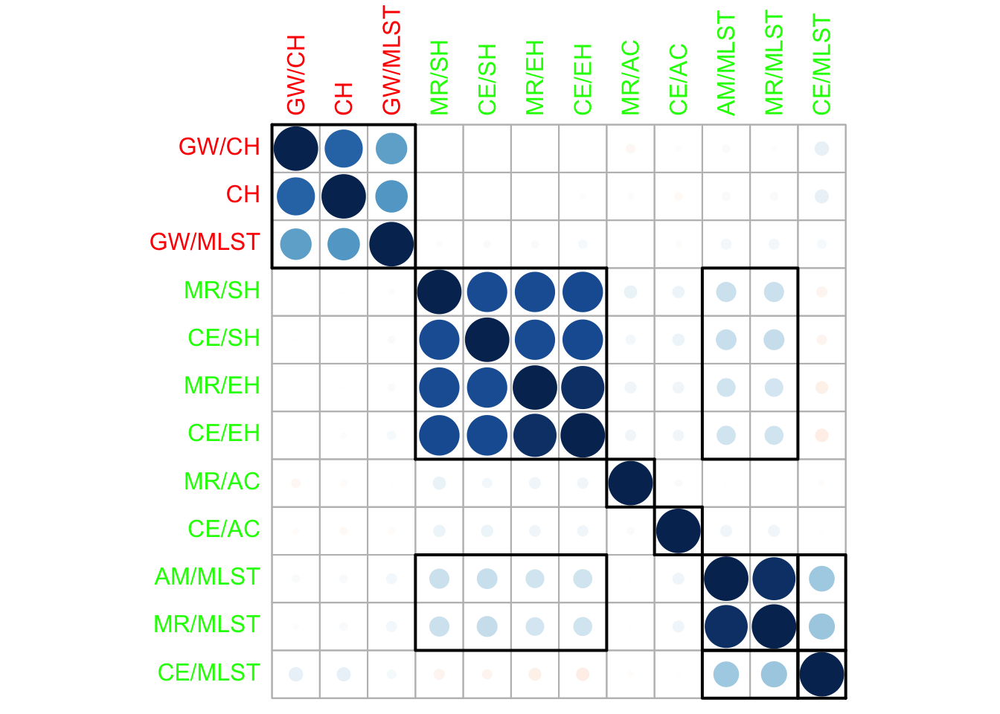
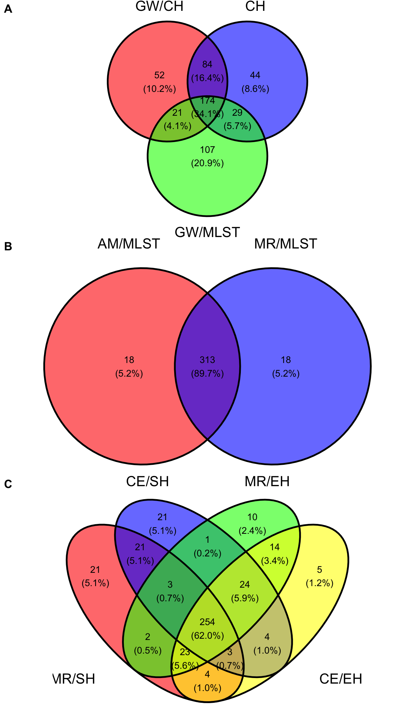
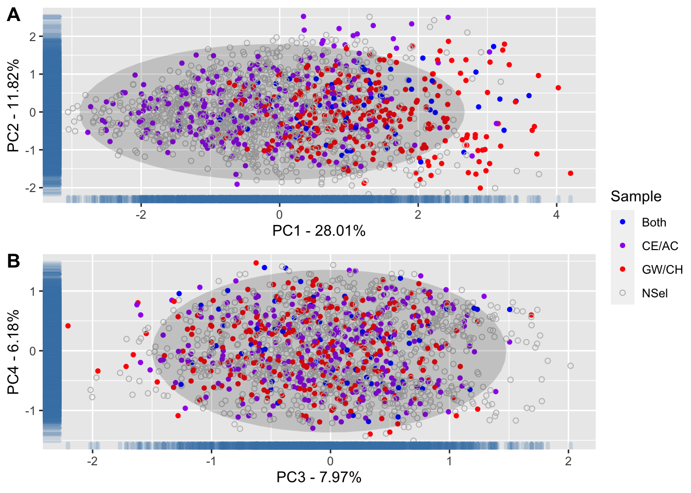

Diversidade Genetica
LucianoRogerio
2021-11-08
Last updated: 2022-05-05
Checks: 6 1
Knit directory: CarolineNCC1/
This reproducible R Markdown analysis was created with workflowr (version 1.7.0). The Checks tab describes the reproducibility checks that were applied when the results were created. The Past versions tab lists the development history.
The R Markdown file has unstaged changes. To know which version of the R Markdown file created these results, you’ll want to first commit it to the Git repo. If you’re still working on the analysis, you can ignore this warning. When you’re finished, you can run wflow_publish to commit the R Markdown file and build the HTML.
Great job! The global environment was empty. Objects defined in the global environment can affect the analysis in your R Markdown file in unknown ways. For reproduciblity it’s best to always run the code in an empty environment.
The command set.seed(20210920) was run prior to running the code in the R Markdown file. Setting a seed ensures that any results that rely on randomness, e.g. subsampling or permutations, are reproducible.
Great job! Recording the operating system, R version, and package versions is critical for reproducibility.
Nice! There were no cached chunks for this analysis, so you can be confident that you successfully produced the results during this run.
Great job! Using relative paths to the files within your workflowr project makes it easier to run your code on other machines.
Great! You are using Git for version control. Tracking code development and connecting the code version to the results is critical for reproducibility.
The results in this page were generated with repository version 7f56ebf. See the Past versions tab to see a history of the changes made to the R Markdown and HTML files.
Note that you need to be careful to ensure that all relevant files for the analysis have been committed to Git prior to generating the results (you can use wflow_publish or wflow_git_commit). workflowr only checks the R Markdown file, but you know if there are other scripts or data files that it depends on. Below is the status of the Git repository when the results were generated:
Ignored files:
Ignored: .DS_Store
Ignored: .Rhistory
Ignored: .Rproj.user/
Ignored: data/.DS_Store
Ignored: data/DadosGBSAtualizadosRenomeados.rds
Ignored: data/DadosGBSDuplicados.rds
Ignored: output/.DS_Store
Ignored: output/CarDarwinMatrix.txt
Unstaged changes:
Modified: analysis/AnDis.Rmd
Modified: analysis/DivGen.Rmd
Modified: output/AllDataCCCaroline.RDS
Modified: output/Shannon-WeaverCCQualIndex.csv
Modified: output/Shannon-WeaverCCQuantIndex.csv
Note that any generated files, e.g. HTML, png, CSS, etc., are not included in this status report because it is ok for generated content to have uncommitted changes.
These are the previous versions of the repository in which changes were made to the R Markdown (analysis/DivGen.Rmd) and HTML (docs/DivGen.html) files. If you’ve configured a remote Git repository (see ?wflow_git_remote), click on the hyperlinks in the table below to view the files as they were in that past version.
| File | Version | Author | Date | Message |
|---|---|---|---|---|
| Rmd | 05dacab | LucianoRogerio | 2021-12-19 | Update diversity analysis |
| html | 05dacab | LucianoRogerio | 2021-12-19 | Update diversity analysis |
| Rmd | 3fe13ea | LucianoRogerio | 2021-11-22 | Improvement for the layout of the website |
| html | 3fe13ea | LucianoRogerio | 2021-11-22 | Improvement for the layout of the website |
| html | fde1797 | LucianoRogerio | 2021-11-22 | Fix of the Shannon Weaver tables |
| Rmd | 36e5d57 | LucianoRogerio | 2021-11-22 | Added the comparison of the Nuclear Core Collections with BAG and between them |
| html | 36e5d57 | LucianoRogerio | 2021-11-22 | Added the comparison of the Nuclear Core Collections with BAG and between them |
| Rmd | 085c3bd | LucianoRogerio | 2021-11-22 | Added the comparison of the Nuclear Core Collections with BAG and between them |
| html | 085c3bd | LucianoRogerio | 2021-11-22 | Added the comparison of the Nuclear Core Collections with BAG and between them |
| Rmd | 6311ec2 | LucianoRogerio | 2021-11-15 | Merge branch ‘main’ of https://github.com/LucianoRogerio/CarolineNCC1 |
| html | 6311ec2 | LucianoRogerio | 2021-11-15 | Merge branch ‘main’ of https://github.com/LucianoRogerio/CarolineNCC1 |
| Rmd | b3b8790 | LucianoRogerio | 2021-11-15 | Add of Shannon-Weaver estimation for each nuclear core collection and the EMBRAPA Cassava bank of germplasm |
| html | b3b8790 | LucianoRogerio | 2021-11-15 | Add of Shannon-Weaver estimation for each nuclear core collection and the EMBRAPA Cassava bank of germplasm |
| Rmd | 5adacf7 | LucianoRogerio | 2021-11-15 | Add of Shannon-Weaver estimation for each nuclear core collection and the EMBRAPA Cassava bank of germplasm |
| html | 5adacf7 | LucianoRogerio | 2021-11-15 | Add of Shannon-Weaver estimation for each nuclear core collection and the EMBRAPA Cassava bank of germplasm |
| Rmd | 3ecd450 | LucianoRogerio | 2021-11-08 | Final graphs for Descritive analysis |
| Rmd | a5ffd57 | LucianoRogerio | 2021-11-08 | Final graphs for Descritive analysis |
Shannon Weaver Index estimation for each core collection
Shannon Weaver Index Quantitative traits
suppressMessages(library(tidyverse)); suppressMessages(library(data.table)); suppressMessages(library(reactable))
source(here::here("code", "Shannon-Weaver.R"))
Alldataset <- readRDS(here::here("output", "AllDataCCCaroline.RDS"))
QualityTrait <- colnames(Alldataset)[sapply(X = Alldataset, class) == "character"] %>%
setdiff(., c("Acessos", "Data", "Method"))
AlldataSetQuant <- Alldataset %>% select(-all_of(QualityTrait))
AlldataSetQuali <- Alldataset %>% select(Acessos, QualityTrait, Data, Method) %>% suppressMessages()
QuantTrait <- data.frame(Trait = colnames(AlldataSetQuant)[2:17],
Min = apply(AlldataSetQuant[2:17], FUN = min, na.rm = TRUE, MARGIN = 2),
Max = apply(AlldataSetQuant[2:17], FUN = max, na.rm = TRUE, MARGIN = 2))
DataMethod <- unique(data.frame(Data = AlldataSetQuant$Data,
Method = AlldataSetQuant$Method))QuantSHs <- NULL
for(i in 1:nrow(DataMethod)){
for(trait in QuantTrait$Trait){
QuantSH <- data.frame(Data = DataMethod$Data[i],
Method = DataMethod$Method[i],
Trait = trait,
SH = Shannon.Weaver.QT(AlldataSetQuant[(AlldataSetQuant$Data%in%DataMethod$Data[i] &
AlldataSetQuant$Method%in%DataMethod$Method[i]),trait],
Min = QuantTrait[QuantTrait$Trait == trait, "Min"],
Max = QuantTrait[QuantTrait$Trait == trait, "Max"],
formula = 2))
QuantSHs <- rbind(QuantSHs, QuantSH)
}
}
Table1SH <- matrix(QuantSHs$SH, byrow = F, ncol = 13)
rownames(Table1SH) <- unique(QuantSHs$Trait)
colnames(Table1SH) <- unique(paste(QuantSHs$Data, QuantSHs$Method, sep = " - "))
colnames(Table1SH)[1] <- "BAG"
write.table(Table1SH, file = here::here("output", "Shannon-WeaverCCQuantIndex.csv"),
sep = ",", dec = ".", quote = FALSE)Table 1. Shannon-Weaver indexes for Cassava quantitative traits of the Bank of germplasm and 12 nuclear core collections.
Shannon Weaver Index Qualitative traits
Trait <- c("CorFolhaApical" = 4, "CorPeciolo" = 6, "CorFolhaDesenv" = 5,
"CorNerv" = 4, "CorCortexCaule" = 4, "CorExternaCaule" = 7,
"CorEpidCaule" = 4, "CorRamosTerm" = 3, "CorExternaRzs" = 4,
"CorCortexRzs" = 4, "CorPolpaRzs" = 5, "NLobulos" = 5,
"Pubescencia" = 2, "FormaLobuloCentral" = 9, "PosicaoPeciolo" = 4,
"Sinuosidade" = 2, "ComprEstip" = 2, "HabCrescCaule" = 2,
"TipoPlan" = 4, "MargEstip" = 2, "HabRamif" = 4, "NiveisRam" = 4,
"ProemCicatrizesFolhas" = 2, "FormaRzs" = 4, "TxtEpidermeRzs" = 2,
"PresPedunculoRzs" = 3, "PosicaoRzs" = 3, "Flowering" = 2,
"DestqPelicRz" = 2, "DestqCortexRz" = 3, "ConstrRzs" = 3,
"AnguloRamif" = 22)
QualTrait <- data.frame(Trait = names(Trait),
NClas = Trait,
row.names = NULL)
QualSHs <- NULL
for(i in 1:nrow(DataMethod)){
for(trait in QualTrait$Trait) {
Data <- AlldataSetQuali[(AlldataSetQuali$Data%in%DataMethod$Data[i] &
AlldataSetQuali$Method%in%DataMethod$Method[i]),trait]
ShannonWeaver <- Shannon.Weaver.QL(Data,
nclass = QualTrait$NClas[QualTrait$Trait%in%trait])
QualSH <- data.frame(Data = DataMethod$Data[i],
Method = DataMethod$Method[i],
Trait = trait,
SH = ShannonWeaver)
QualSHs <- rbind(QualSHs, QualSH)
}
}
Table2SH <- matrix(QualSHs$SH, byrow = F, ncol = 13)
rownames(Table2SH) <- unique(QualSHs$Trait)
colnames(Table2SH) <- unique(paste(QualSHs$Data, QualSHs$Method, sep = " - "))
colnames(Table2SH)[1] <- "BAG"
write.table(Table2SH, file = here::here("output", "Shannon-WeaverCCQualIndex.csv"),
sep = ",", dec = ".", quote = FALSE)
SHInd <- as.data.frame(rbind(Table1SH, Table2SH))Table 2. Shannon-Weaver indexes for Cassava quality traits of the Bank of germplasm and 12 nuclear core collections.
Core Collection Selection - Phenotypic data
SHBAG <- SHInd[, "BAG"]
SHIndPhen <- SHInd[ , colnames(SHInd)%like%"Pheno"]
SHRelPhen <- (SHIndPhen - SHBAG)*100/SHBAG
SHSelPhen <- data.frame(Method = colnames(SHRelPhen),
SHMeanImprov = colMeans(SHRelPhen, na.rm = TRUE),
SHsd = apply(SHRelPhen, FUN = sd, na.rm = TRUE, MARGIN = 2),
row.names = NULL)Table 3. Mean improvement of the Shannon-Weaver diversity index in % of nuclear core collections estimated of Phenotypic data compared to the Bank of Germplasm
The phenotypic Core Collection selected was GW/CH
Core Collection Selection - Genotypic data
SHIndGen <- SHInd[ , colnames(SHInd)%like%"Geno"]
SHRelGen <- (SHIndGen - SHBAG)*100/SHBAG
SHSelGen <- data.frame(Method = colnames(SHRelGen),
SHMeanImprov = colMeans(SHRelGen, na.rm = TRUE),
SHsd = apply(SHRelGen, FUN = sd, na.rm = TRUE, MARGIN = 2),
row.names = NULL)Table 4. Mean improvement of the Shannon-Weaver diversity index in % of nuclear core collections estimated of Genotypic data compared to the Bank of Germplasm
The Genotypic Core Collection selected was CE/AC
BAGClones <- Alldataset$Acessos[Alldataset$Data == "BAG"]
CCMethods <- unique(Alldataset$Method) %>% setdiff("BAG")
SelCC <- tibble(Clones = BAGClones)
for(i in CCMethods){
Common <- BAGClones %in% Alldataset$Acessos[Alldataset$Method == i] %>%
as.numeric %>% as.data.frame
colnames(Common) <- i
SelCC <- cbind(SelCC, Common)
}
row.names(SelCC) <- SelCC$Clones
SelCC$Clones <- NULL
CoincObs <- matrix(data = NA, nrow = ncol(SelCC), ncol = ncol(SelCC))
colnames(CoincObs) <- rownames(CoincObs) <- colnames(SelCC)
for(i in colnames(SelCC)){
for(j in colnames(SelCC)){
if(i == j){ CoincObs[i, j] <- 1} else {
CoincObs[i, j] <- sum(SelCC[, i] == SelCC[, j])/nrow(SelCC)
}
}
}
CoincEsp <- matrix(data = (sum(SelCC[,1])/nrow(SelCC))**2 + (1-(sum(SelCC[,1])/nrow(SelCC)))**2,
nrow = ncol(SelCC), ncol = ncol(SelCC))
colnames(CoincEsp) <- rownames(CoincEsp) <- colnames(SelCC)
Kappa <- round((CoincObs - CoincEsp)/(1 - CoincEsp), digits = 4)Table 5. Kappa Index for coincidence of the clone selection for the 12 nuclear collections.
Fig 1. Kappa index plot of the coincidence of selected clones by the 12 methods of nuclear collection.
corrplot 0.92 loaded
Venn diagram for each Nuclear Collection Group
library(ggvenn)Loading required package: gridVennDPNC <- list(
`GW/CH` = rownames(SelCC)[SelCC$`GW/CH` == 1],
CH = rownames(SelCC)[SelCC$CH == 1],
`GW/MLST` = rownames(SelCC)[SelCC$`GW/MLST` == 1])
VD1 <- ggvenn(VennDPNC, fill_color = c("red", "blue", "green"), fill_alpha = 0.6)
VennDGNC1 <- list(
`MR/SH` = rownames(SelCC)[SelCC$`MR/SH` == 1],
`CE/SH` = rownames(SelCC)[SelCC$`CE/SH` == 1],
`MR/EH` = rownames(SelCC)[SelCC$`MR/EH` == 1],
`CE/EH` = rownames(SelCC)[SelCC$`CE/EH` == 1])
VD2 <- ggvenn(VennDGNC1, fill_color = c("red", "blue", "green", "yellow"), fill_alpha = 0.6)
VennDGNC2 <- list(
`AM/MLST` = rownames(SelCC)[SelCC$`AM/MLST` == 1],
`MR/MLST` = rownames(SelCC)[SelCC$`MR/MLST` == 1])
VD3 <- ggvenn(VennDGNC2, fill_color = c("red", "blue"), fill_alpha = 0.6) Fig 2. Venn diagram for the three groups of Nuclear Collections

Comparison of the diversity Between BAG and the Core Collections samples
suppressMessages(library(StatMatch)); library(here)here() starts at /Users/lbd54/Documents/GitHub/CarolineNCC1suppressMessages(library(tidyverse))
DataCar <- readRDS(file = here::here("output", "DataSelPreparedCar.rds")) %>%
mutate(ComprFilotaxia = as.character(ComprFilotaxia),
ComprEstip = as.character(ComprEstip))
DistCar <- gower.dist(data.x = DataCar[,-1])
row.names(DistCar) <- colnames(DistCar) <- DataCar$Acessos
PCA <- prcomp(DistCar)
Perc <- 100*PCA$sdev^2/sum(PCA$sdev^2)
PercAc <- as.vector(rep(NA, times = length(Perc)))
for(i in 1:length(Perc)) {
PercAc[i] <- sum(Perc[1:i])
names(PercAc)[i] <- i
}Fig 3. Accumulated Variance explained by PCA

PointPCA1 <- as.data.frame(PCA$x[,1:5])
Alldataset <- readRDS(here::here("output", "AllDataCCCaroline.RDS"))
CCPhen <- Alldataset %>% filter(Data == "Pheno", Method == "GW/CH") %>%
select(Acessos)
CCGen <- Alldataset %>% filter(Data == "Geno", Method == "CE/AC") %>%
select(Acessos)
PointPCA1$Sample <- rep(NA, nrow(PointPCA1))
for(i in row.names(PointPCA1)){
if(i%in%CCPhen$Acessos && i%in%CCGen$Acessos) {
PointPCA1$Sample[row.names(PointPCA1)==i] <- "Both"
} else if(i%in%CCPhen$Acessos && !i%in%CCGen$Acessos){
PointPCA1$Sample[row.names(PointPCA1)==i] <- "GW/CH"
} else if(!i%in%CCPhen$Acessos && i%in%CCGen$Acessos){
PointPCA1$Sample[row.names(PointPCA1)==i] <- "CE/AC"
} else {
PointPCA1$Sample[row.names(PointPCA1)==i] <- "NS"
}
}PC12 <- ggplot(data = PointPCA1, aes(x = PC1, y = PC2)) +
geom_point(aes(color = Sample, shape = Sample)) +
geom_rug(col = "steelblue", alpha = 0.2, size = 1.5) +
scale_shape_manual(values = c(16, 16, 16, 1)) +
scale_color_manual(values = c("blue", "purple", "red", "gray")) +
stat_ellipse(geom="polygon",
alpha = 0.2,
show.legend = FALSE,
level = 0.95) +
xlab(paste0("PC1 - ", round(Perc[1], digits = 2), "%")) +
ylab(paste0("PC2 - ", round(Perc[2], digits = 2), "%"))
PC34 <- ggplot(data = PointPCA1, aes(x = PC3, y = PC4)) +
geom_point(aes(color = Sample, shape = Sample)) +
geom_rug(col = "steelblue", alpha = 0.2, size = 1.5) +
scale_shape_manual(values = c(16, 16, 16, 1)) +
scale_color_manual(values = c("blue", "purple", "red", "gray")) +
stat_ellipse(geom="polygon",
alpha = 0.2,
show.legend = FALSE,
level = 0.95) +
xlab(paste0("PC3 - ", round(Perc[3], digits = 2), "%")) +
ylab(paste0("PC4 - ", round(Perc[4], digits = 2), "%"))Fig 4. Análise de Componentes Principais da Matriz de Distância de Gower dos acessos do Banco ativo de germoplasma da EMBRAPA Selecionados pelas Coleções Nucleares GW/CH e AM/MLST

Back - Análises Descritivas
sessionInfo()R version 4.1.2 (2021-11-01)
Platform: aarch64-apple-darwin20 (64-bit)
Running under: macOS Big Sur 11.6.5
Matrix products: default
BLAS: /Library/Frameworks/R.framework/Versions/4.1-arm64/Resources/lib/libRblas.0.dylib
LAPACK: /Library/Frameworks/R.framework/Versions/4.1-arm64/Resources/lib/libRlapack.dylib
locale:
[1] en_US.UTF-8/en_US.UTF-8/en_US.UTF-8/C/en_US.UTF-8/en_US.UTF-8
attached base packages:
[1] grid stats graphics grDevices utils datasets methods
[8] base
other attached packages:
[1] here_1.0.1 StatMatch_1.4.1 lpSolve_5.6.15 survey_4.1-1
[5] survival_3.3-1 Matrix_1.4-1 proxy_0.4-26 ggpubr_0.4.0
[9] ggvenn_0.1.9 corrplot_0.92 reactable_0.2.3 data.table_1.14.3
[13] forcats_0.5.1 stringr_1.4.0 dplyr_1.0.9 purrr_0.3.4
[17] readr_2.1.2 tidyr_1.2.0 tibble_3.1.7 ggplot2_3.3.6
[21] tidyverse_1.3.1
loaded via a namespace (and not attached):
[1] fs_1.5.2 lubridate_1.8.0 httr_1.4.3 rprojroot_2.0.3
[5] tools_4.1.2 backports_1.4.1 bslib_0.3.1 utf8_1.2.2
[9] R6_2.5.1 DBI_1.1.2 colorspace_2.0-3 withr_2.5.0
[13] gridExtra_2.3 tidyselect_1.1.2 compiler_4.1.2 git2r_0.30.1
[17] cli_3.3.0 rvest_1.0.2 xml2_1.3.3 labeling_0.4.2
[21] sass_0.4.1 scales_1.2.0 digest_0.6.29 rmarkdown_2.14
[25] pkgconfig_2.0.3 htmltools_0.5.2 dbplyr_2.1.1 fastmap_1.1.0
[29] highr_0.9 htmlwidgets_1.5.4 rlang_1.0.2 readxl_1.4.0
[33] rstudioapi_0.13 jquerylib_0.1.4 generics_0.1.2 farver_2.1.0
[37] jsonlite_1.8.0 crosstalk_1.2.0 car_3.0-12 magrittr_2.0.3
[41] Rcpp_1.0.8.3 munsell_0.5.0 fansi_1.0.3 abind_1.4-5
[45] lifecycle_1.0.1 stringi_1.7.6 whisker_0.4 yaml_2.3.5
[49] carData_3.0-5 MASS_7.3-57 promises_1.2.0.1 crayon_1.5.1
[53] lattice_0.20-45 splines_4.1.2 haven_2.5.0 cowplot_1.1.1
[57] hms_1.1.1 knitr_1.38 pillar_1.7.0 ggsignif_0.6.3
[61] reprex_2.0.1 glue_1.6.2 evaluate_0.15 mitools_2.4
[65] modelr_0.1.8 vctrs_0.4.1 tzdb_0.3.0 httpuv_1.6.5
[69] cellranger_1.1.0 gtable_0.3.0 reactR_0.4.4 assertthat_0.2.1
[73] xfun_0.30 broom_0.8.0 rstatix_0.7.0 later_1.3.0
[77] workflowr_1.7.0 ellipsis_0.3.2